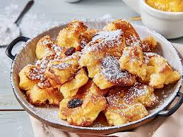

Kaiserschmarrn

Bild von Chefkoch
Beschreibung
Kaiserschmarren ist ein traditionelles österreichisches Gericht –
ein fluffiger, zerrissener Pfannkuchen, oft mit
Rosinen verfeinert und mit Puderzucker bestäubt, der
meist mit Zwetschkenröster oder Apfelmus serviert wird.
Zutaten für 1 Portion
- 1 Ei
- 311⁄4 g Mehl (es sieht ein bisschen komisch aus)
- 311⁄4 ml Milch
- 1⁄4 Prise Salz (was ist ein Prise?)
- 1⁄4 TL Salz
- 10 g Backpulver
- 20 g Rosinen
- 1 EL Butter
- Wenn du willst, kannst du Puderzucker benutzen, aber ich hab keine
Ahhhhhh ich hasse das. Es sieht so hässlich aus
Zubereitung
- Das Eigelb vom Eiweiß trennen.
- In einer Schüssel werden das Eigelb, Mehl, Milch, Salz, Backpulver
und Zucker hinzugefügt und zu einem glatten Teig verrühren.
- Der Teig wird mindestens 10 Min. ruhen gelassen. Warum? Keine Ahnung.
- Jetzt wirst du deine Armmuskeln aufbauen, wenn du kein Standmixer hast.
- Eiweiß wird zu einem Eischnee geschlagen.
- ich will nicht weiter, sry
keine ahnung, ob ich alles richtig schreibe T-T
Rezept
Zürck